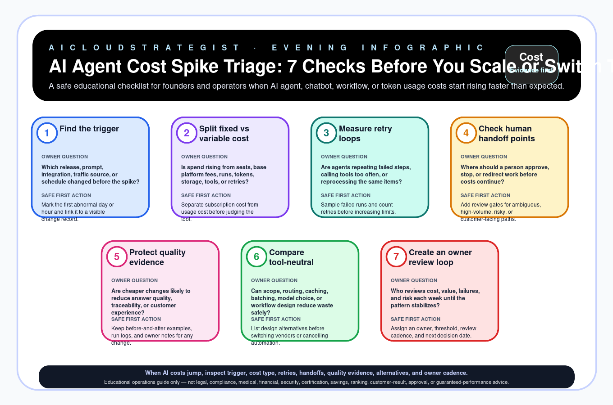

Evening publication · AI agent cost triage
AI Agent Cost Spike Triage: 7 Checks Before You Scale or Switch Tools
A safe educational checklist for founders and operators when AI agent, chatbot, workflow, or token usage costs start rising faster than expected.

Seven checks before scaling or switching tools
| Step | Check | Owner question | Safe first action |
|---|---|---|---|
| 1 | Find the trigger | Which release, prompt, integration, traffic source, or schedule changed before the spike? | Mark the first abnormal day or hour and link it to a visible change record. |
| 2 | Split fixed vs variable cost | Is spend rising from seats, base platform fees, runs, tokens, storage, tools, or retries? | Separate subscription cost from usage cost before judging the tool. |
| 3 | Measure retry loops | Are agents repeating failed steps, calling tools too often, or reprocessing the same items? | Sample failed runs and count retries before increasing limits. |
| 4 | Check human handoff points | Where should a person approve, stop, or redirect work before costs continue? | Add review gates for ambiguous, high-volume, risky, or customer-facing paths. |
| 5 | Protect quality evidence | Are cheaper changes likely to reduce answer quality, traceability, or customer experience? | Keep before-and-after examples, run logs, and owner notes for any change. |
| 6 | Compare tool-neutral options | Can scope, routing, caching, batching, model choice, or workflow design reduce waste safely? | List design alternatives before switching vendors or cancelling automation. |
| 7 | Create an owner review loop | Who reviews cost, value, failures, and risk each week until the pattern stabilizes? | Assign an owner, threshold, review cadence, and next decision date. |
Truth boundary
Educational operations guide only — not legal, compliance, medical, financial, security, certification, savings, ranking, customer-result, approval, or guaranteed-performance advice.